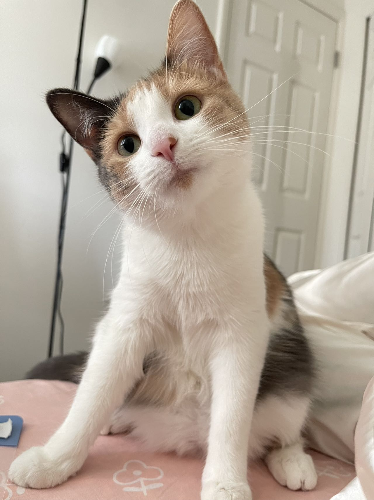
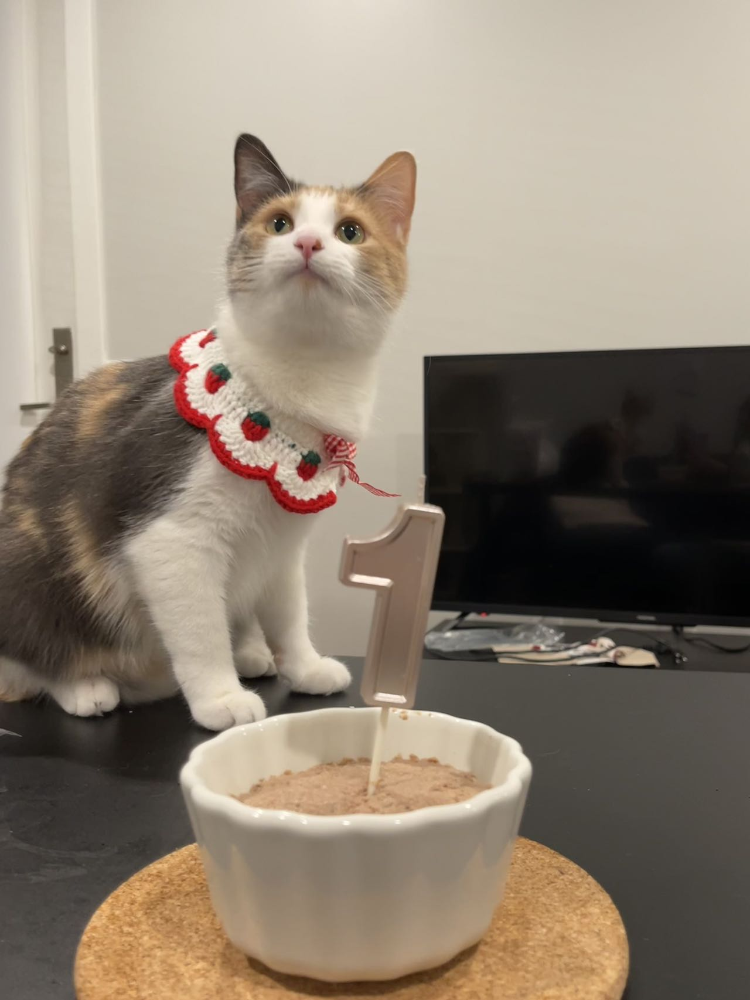
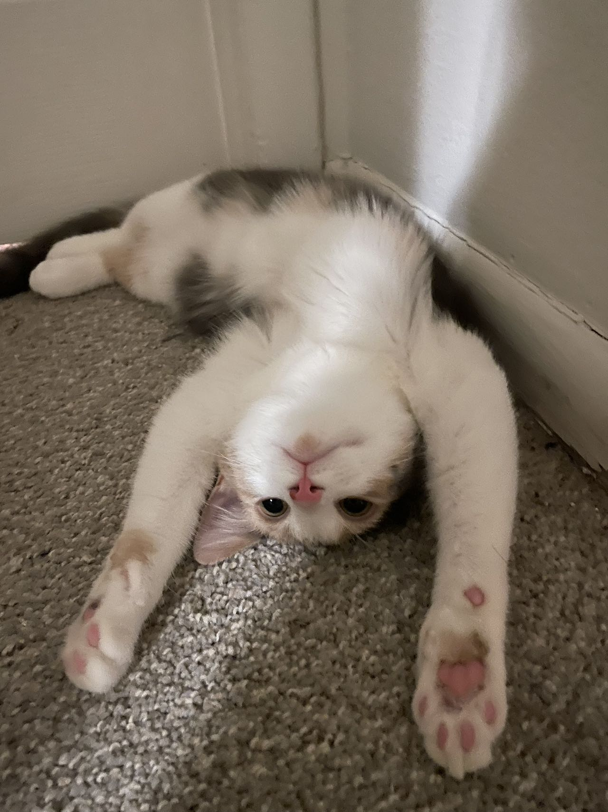
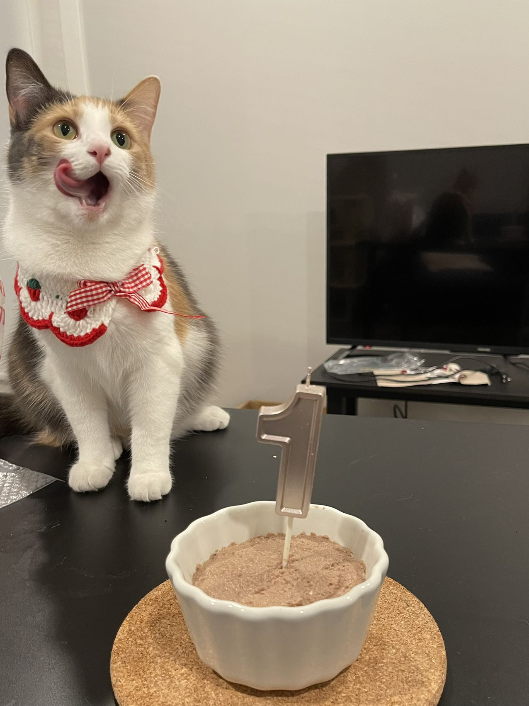
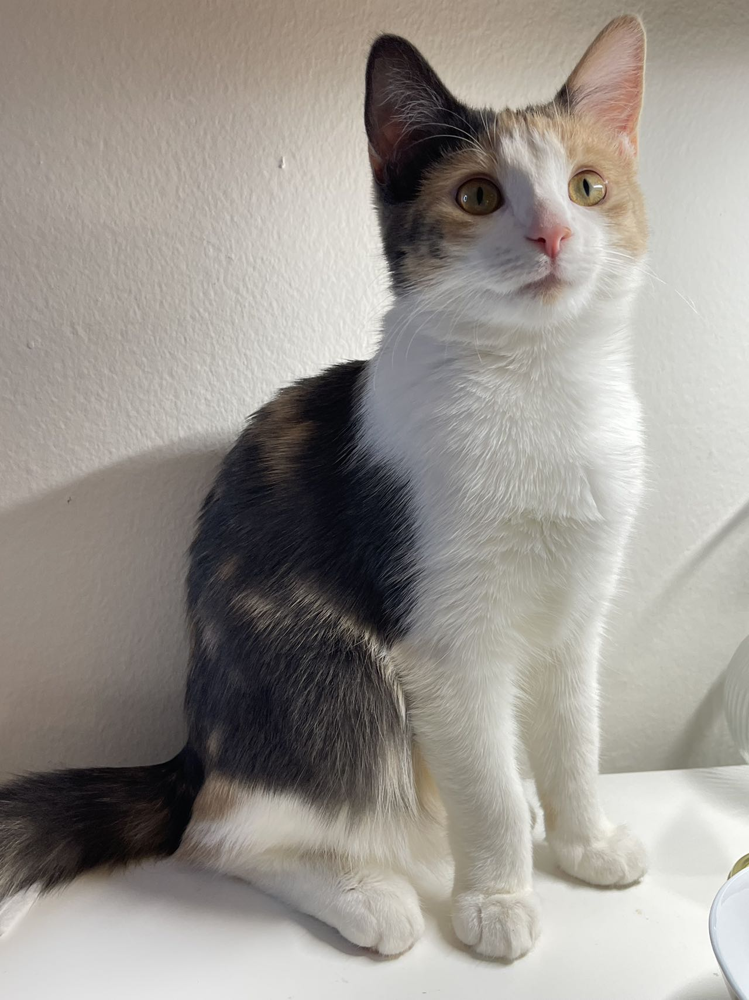
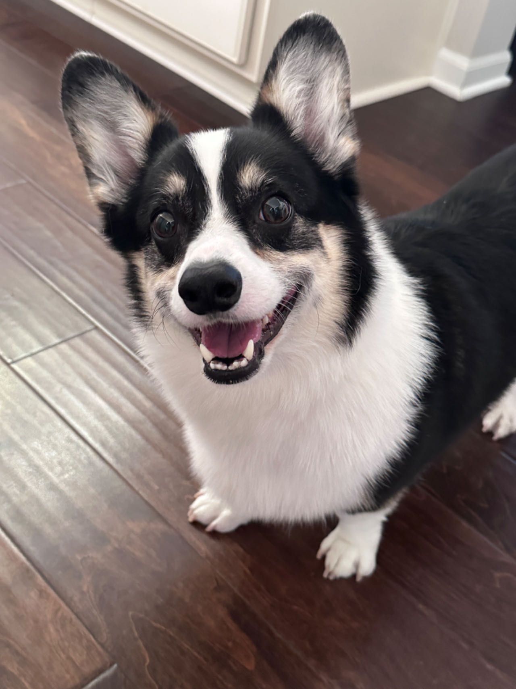
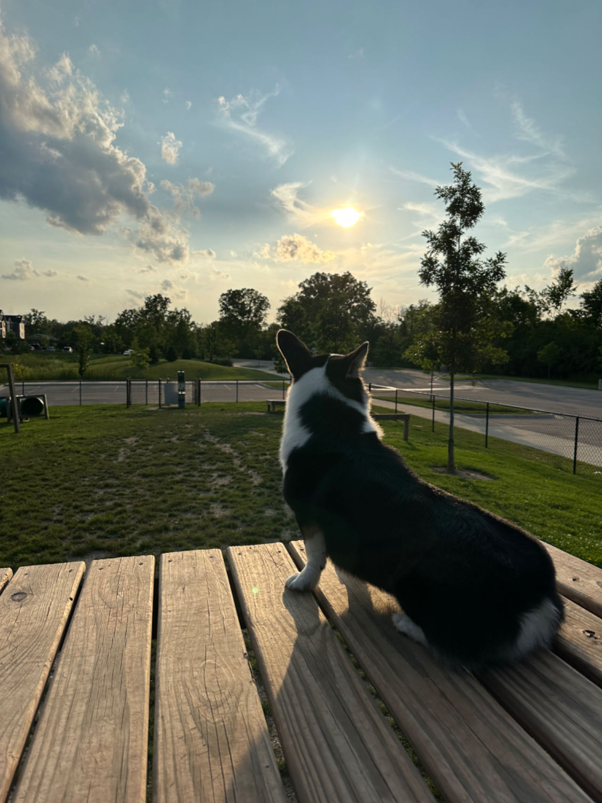
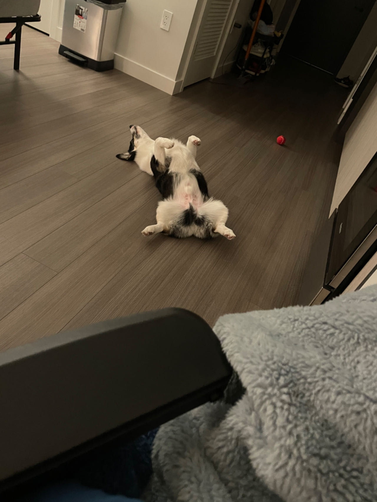
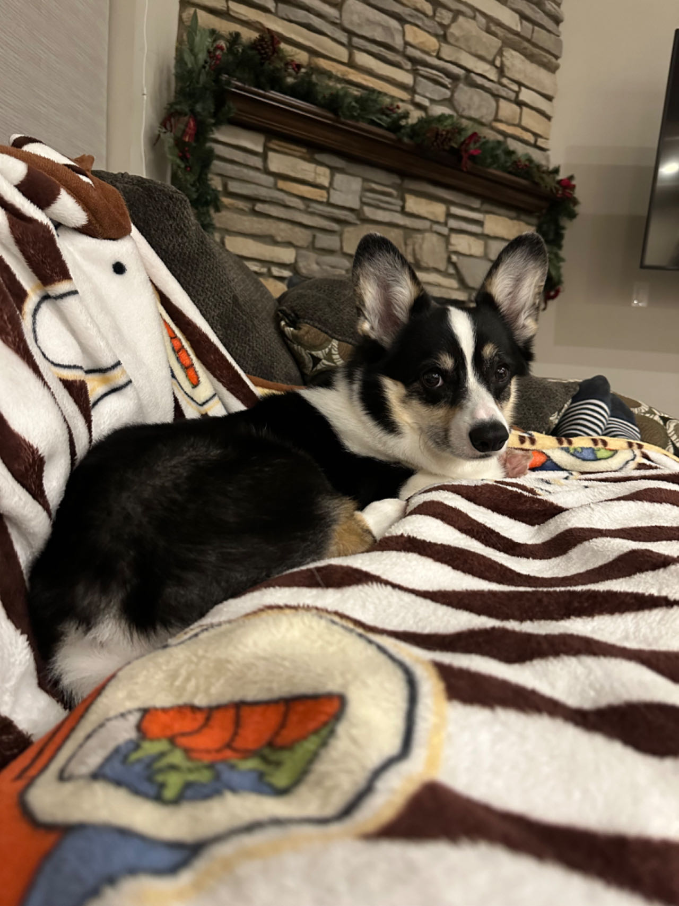
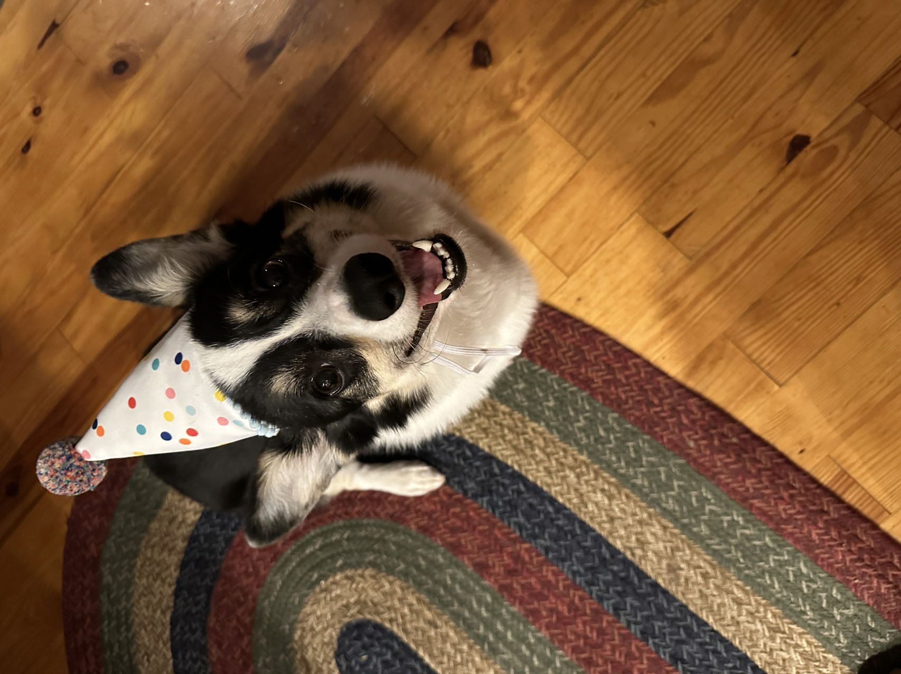

See all best baby!
PaoPao
PaoPao is a beautiful one-year-old female cat who was adopted by her owner when she was two months old. She is a short, medium-fur cat and now weighs 10 pounds. She loved to run around the house, to roll on the grass, and to be curious about all the new things and people.
She often watches the scenery outside by the window and likes to blow the wind and bask in the sun. She often hides under the couch and suddenly comes out to scare people, and her nickname is "Stapler" because she often leaves two sharp tooth marks on people's butts. Even so, everyone loved her, especially her master, me. I love my cat PaoPao very, very, very much.
Photo Gallery
   Likes
- Soft blanket
- Feather toys with sounds
- Grab the little pink couch
Bacon Q Dog

Bacon Q. Dog is a 9yr old labradoodle. He prefers to spend his days lounging among the three different beds/couches that his family has gifted him. He enjoys a walk or two around the neighborhood, as long as he can pretend that he doesn't see any of the other animals to avoid the embarrassment of not wanting to admit he has no wolf-like skills in chasing them.
At night just as the rest of the family is ready to relax, Bacon suddenly wants to release all of his energy. He will place his toys on a mini couch and frantically drag the couch around, giving his toys "a ride." There is also a lot of rolling. Lots and lots of rolling.
Photo Gallery


Likes
- Belly rubs
- Playing tug-of-war
- Sneaking onto the couch
Manto
Manto is a five-year-old black corgi. He usually likes to eat, and other people eat food he is greedy. He also likes to go out and play, basking in the sun on the lawn and playing Frisbee.
He is a good little dog. He never barks. He likes to play with people very much.
Photo Gallery
   Likes
- Laser pointer
- Toys with sounds
- Eating and sleeping
Van Gogh

Van Gogh is a three year old cat of mixed ragdoll and domestic shorthair breed. He was adopted when he was 7 months old. Van Gogh has been a people cat since he was young.
He craves attention but needs alone time when he wants it. He is purely a masterpiece when his sapphire eyes staring at his human friends. He loves birds, rats, insects, and water from human mug..
Photo Gallery


Likes
- Biting his human
- Chicken Breast
- His catnip pillow
Maple

Maple is a 2 year old tabby cat with brown stripes. She is very playful and friendly but also loves lounging in the sun! Maple is a huge fan of treats - she has even learned how to open doors to steal some extra treats.
Sometimes Maple has boundless energy. At night, she gets the zoomies after eating her final meal of the day. It usually takes her another hour to settle down before she can take a long nap.
Photo Gallery


Likes
- Belly rubs
- Treats
- Stretching her paws